A working urban world model of South Kensington, London: a single 3-D city model, six physical layers computed on the same grid (wind, temperature, sunlight, a solar-driven day cycle, pollutant transport, surface-water flooding), three kinds of moving agents (road traffic, delivery UAVs, a pigeon flock) and one browser page that plays all of them in the same coordinate frame.
grid 704 × 768 · 4 mdomain X 480–3552 · Y 640–3456 mmodel 254 MB glTF · meshoptreplay clock 1 h
The viewer's opening shot: Imperial College campus at t = 120 s of the replay. Cars are the SUMO run, UAVs the NVMF schedule, buildings the core008 model.
Why it is one work
Every module writes into the same frame
The modules were built by different people with different tools, from a latent-space wind surrogate on an RTX 5090 to a Blender export of a station plate. What makes them one system is a strict contract: one 4 m raster with a fixed origin and orientation, one metre-based glTF world, and a published transform between the two. Anything that lands in that frame shows up in the viewer without preprocessing.
Sources on the left become grids in the shared raster, models run on those grids, and the results are written as plain arrays the viewer streams frame by frame. The wind field feeds the temperature models and the pollutant transport; the 1 m terrain (LIDAR ground plus building blocks) feeds both the flood and the sunlight models, and the sunlight model's shade and sky-view factor drive the 3-D temperature model's day cycle. Everything 1 m is exported alongside 4 m block means on the same grid.
Layer
Grid
Frames
Frame step
Array
Producer
Wind (u, v, w)
4 m · 704 × 768 · layers 8–12 m and 40–44 m
100
25 s
wind/uvw_z8-12m_tcyx.npy
SCALED latent run
Temperature 2-D
4 m · 704 × 768 · 12–16 m layer
61
25 s
temperature2d/temperature_tyx.npy
label model on wind steps 41–100
Temperature 3-D
4 m · 704 × 768 · 10 m slice
5 + 8 ref.
90 s
temperature3d/unet_one_step_tyx.npy
one-step U-Net vs solver
Pollution
4 m · 704 × 768 · 12–16 m layer
100
25 s
pollution/concentration_z12-16m_tyx.npy
transport on wind steps
Sunlight, irradiance
4 m · 704 × 768, block means of the 1 m model
99 / 47
10 min
solar/ghi_4m_20260621_tyx.npy
ShadowNet + SVF + ASHRAE, two solstices
Sunlight, shadows
1 m · 2816 × 3072 · uint8
17 / 7
1 h
solar/shadow_1m_20260621_tyx.npy
ShadowNet direct beam
Day cycle temperature
4 m · 704 × 768 · surface, 0–4 m, 12–16 m
20
1 h
temperature3d_solar/diurnal_20260621_*.npy
Yi Qi 3-D model, solar-coupled
Flood depth
1 m · 2816 × 3072, and 4 m block means
19
10 min
flood/depth_4m_tyx.npy
shallow-water solver
Traffic
metres, glTF world · 5.29 M records
3,600
1 s
traffic/replay/traffic_flow.f32
SUMO 1.27.1
UAVs
metres, glTF world · 30 stations
3,600
1 s
schedule.json
NVMF replay
Birds
4 m solid voxels, X 600–1300 / Z 350–1050
3,600
1 s
birds_southken/
flock model
Module group
Geometry
The city exists twice: as a glTF model the viewer draws, and as voxel and raster masks the physics runs on. Both come from the same core008 asset, so a wall in the wind field is the wall you see. Three geometry efforts extend that base without touching it.
core008 city model and its 1 m voxelisation
The base asset is a full-city glTF with buildings, roads, footways, grass and trees, Y up in metres. For the physics it is voxelised at 1 m over a 64 m tall domain of 2816 × 3072 cells and conservatively coarsened to 4 m: a 4 m cell counts as solid if any of its 1 m voxels does, so narrow streets close and the wind field never leaks through a wall. The viewer confirms the alignment by matching the model's building bounding box against the voxel extent to the metre.
2.8 × 2.6
km covered by the raster
19.8 %
of 1 m ground cells inside buildings
17.7 %
grass and tree canopy
16
4 m layers, bottom 64 m
306 missing buildings from OpenStreetMap
An audit compared every mapped building inside the ground rectangle against the model. Of 6,631 features, 309 conservative candidates lay wholly inside the bounds with under 2 % overlap against existing buildings, and 306 also cleared the drivable lanes. They were extruded in Blender with estimated heights and procedural facades, registered in the same EPSG:32630 frame (median residual 23 mm on 5,838 control points), and exported as a separate GLB so the original model stays byte-identical.
Three candidates with real road conflicts were deliberately left out and are listed in the status report.
Heights, roof shapes and windows are estimates, not photogrammetry. No satellite pixels were traced.
The physics fields were not recomputed after the additions. They describe the original geometry.
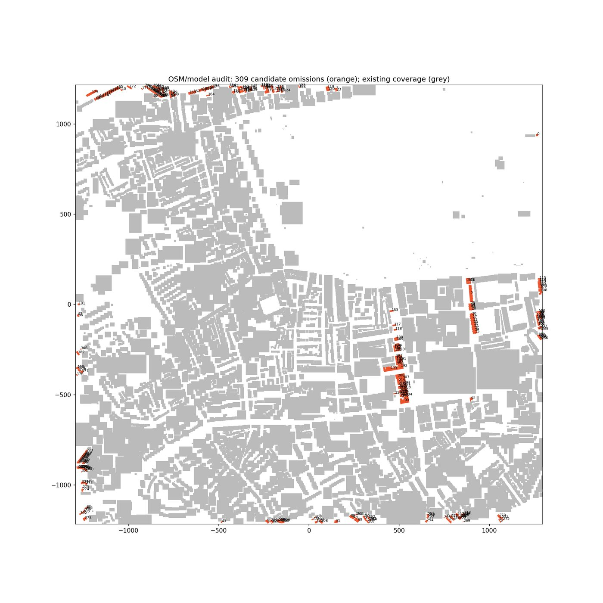
Audit map: accepted footprints against the represented buildings and lane ribbons. From geometry/completion/reports/.
A Blender-authored plate of the station district: 245 OSM buildings with PBR facades, the station arcade, the open railway cutting and platforms, gardens, trees and street lamps. Its local frame is rotated against the main model by the UTM grid convergence, so it is placed with a rigid transform fitted on the 237 buildings the two files share, matched by OSM id. Inside the plate the main model's ground, roads and duplicate buildings are clipped away; outside it the tile is clipped. It stays off by default because its palette reads differently from the base model.
237
shared buildings used for the fit
0.7 m
median residual after the fit
+0.038 rad
rotation about Y
Extending the campus-grade detail outward
A planned batch process: audit the boundary of the authored campus geometry, rank complete neighbouring buildings within a 150 m search ring, model one adjacent building per reviewed batch, and only integrate results that replace their original nodes by source id. The brief fixes the coordinate contract and the evidence standard so later batches cannot drift. No geometry has been produced yet.
Six layers, one grid. The wind comes first because the temperature and pollution models consume it; the sunlight model shares the flood model's 1 m terrain and in turn drives the 3-D temperature model's day cycle. All runs were made on a single RTX 5090 workstation and exported as arrays with a manifest describing shape, units and orientation, which is exactly what the viewer reads.
Wind: a latent U-Net stepped over the whole city
The published SCALED surrogate was trained on a 1024 m South Kensington case. To run it over the 2.8 km domain the geometry is encoded once into a latent field, then each time step advances nine 1024 m latent blocks with a 4-cell halo and never returns to physical space until the final decode. That is the same latent-to-latent regime the model was trained in, and it removed the momentum loss that a physical-space blocking attempt showed. From rest the field settles into a statistically steady, turbulent state after about 50 steps with the inflow from the west.
3.9 s
per step, 9 blocks, inference only
1.12 m/s
mean fluid-cell speed at step 100
0.08
step-to-step RMS change once steady
24.4 GiB
peak GPU memory (decode)
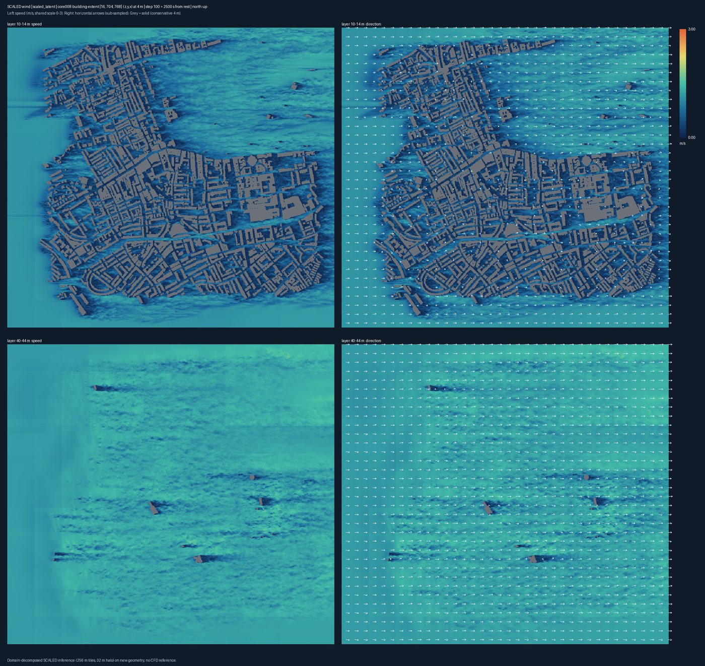
Step 100 at 4 m: speed and horizontal direction at 10–14 m (top) and 40–44 m (bottom). Wakes, street channelling, and no seams between the 1024 m blocks.
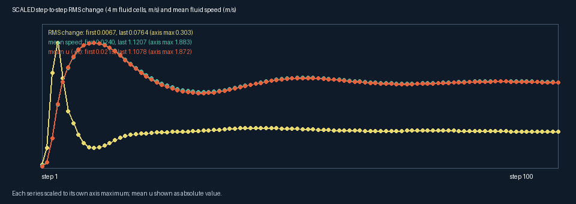
Spin-up: mean speed peaks at step 10, dips, then holds between 1.10 and 1.18 m/s.
Interpretation boundaryNo CFD or measurement reference exists for this geometry. The 25 s per step mapping is inherited from the tutorial package, the 64 m domain cuts the tops of buildings above that height, and the conservative 4 m coarsening closes narrow streets.
Temperature: two models, one honest comparison
The 3-D experiment drives a controlled heat solver with wind steps 82 to 100 (ambient 26 °C, ground and roofs at 30 °C) and asks a single-step U-Net to predict each next state. Used one step at a time it beats the persistence baseline from 180 s onward and stays near 0.26 °C error. Fed its own output recursively, its error grows linearly to 1.5 °C, so the recursive mode is reported as not usable. The 2-D label model is the one shown in the viewer: a fast surface-layer solver on the same wind, with building footprints, roof heights and vegetation as labels, giving a 1500 s summer-afternoon evolution in 7 s of compute.
Lead time
One-step U-Net
Recursive U-Net
Persistence
+90 s
0.347
0.347
0.192
+180 s
0.277
0.607
0.321
+270 s
0.270
0.908
0.407
+360 s
0.266
1.192
0.465
+450 s
0.263
1.495
0.504
Mean absolute error in °C over fluid cells against the solver reference.
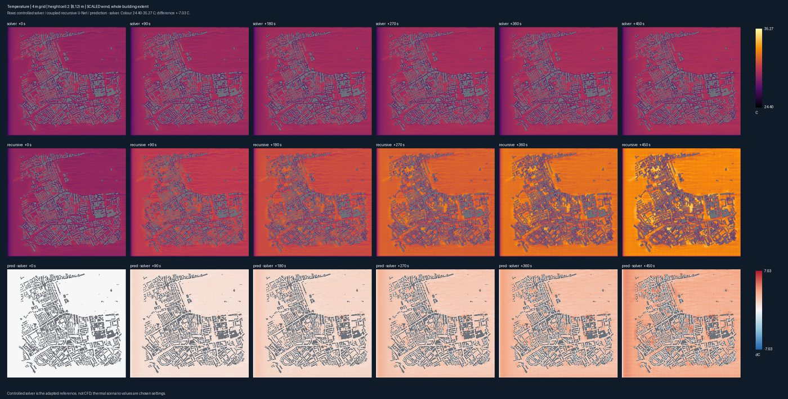
10 m slice at +450 s: solver reference, one-step and recursive U-Net.
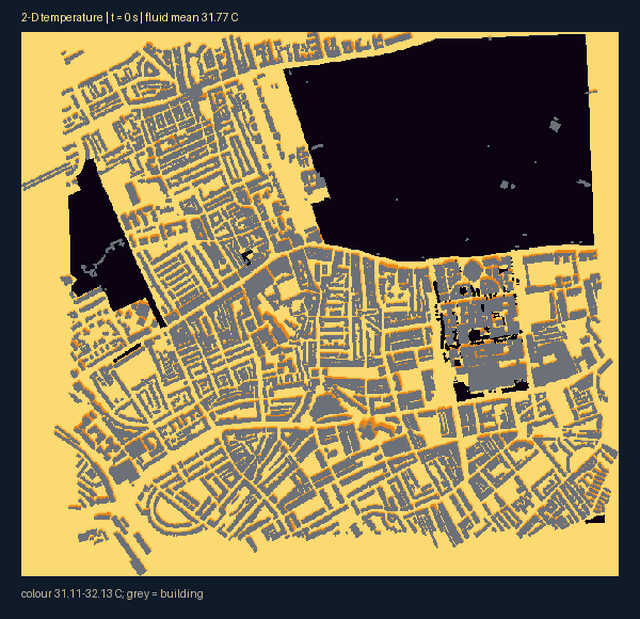
2-D label model, 12–16 m layer: mean rises from 31.78 to 31.86 °C over 1500 s, range 30.8–32.2 °C.
Sunlight: shadows and sky view as a visibility transport problem
The same idea as the wind and flood solvers, applied to light: a cell is in shadow when the height field along the ray towards the sun rises above the cell's own line of sight, which is a running maximum along that ray. The running maximum is built by doubling (shift, take the maximum, shift twice as far, repeat), so a shadow of any length costs only log₂ of its length in layers, and every shift is an exact integer step with no interpolation. The same network run at 16 azimuths and 18 altitudes gives each cell its horizon angles and hence its sky-view factor. An ASHRAE clear-sky model then turns sun position, shadow and sky view into irradiance. Both solstice days at 1 m over the whole 2.8 × 2.6 km domain take under two seconds on the GPU.
Clear-sky day
21 June
21 December
Sunrise to sunset, local
04:50–21:10 · 16.5 h
08:10–15:50 · 7.8 h
Maximum sun altitude
61.9°
15.1°
Ground cells: mean hours of direct sun
12.7 h
4.4 h
Ground with under 1 h of direct sun
0.9 %
23.7 %
Daily irradiation: open sky / ground mean
8.21 / 7.38 kWh/m²
0.99 / 0.72 kWh/m²
Mean ground sky-view factor
0.84 (10th–90th percentile 0.49–0.99)
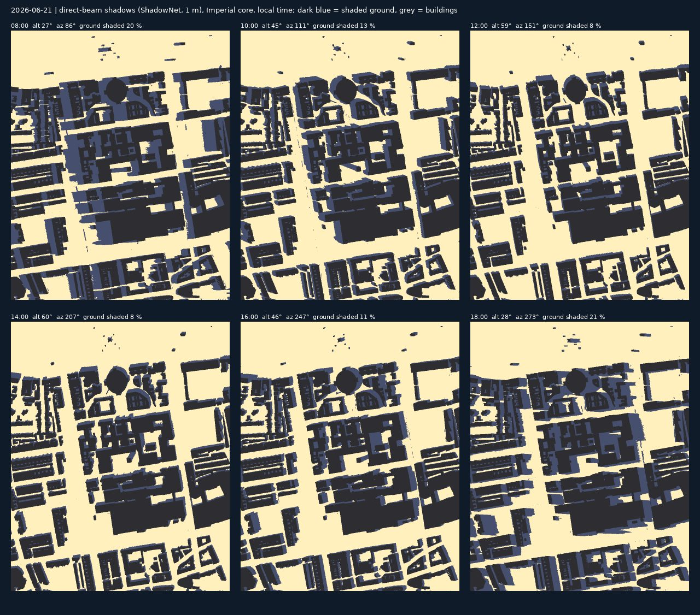
21 June, core area, 08:00 to 18:00 every two hours. Nearly every street sees hours of direct sun.
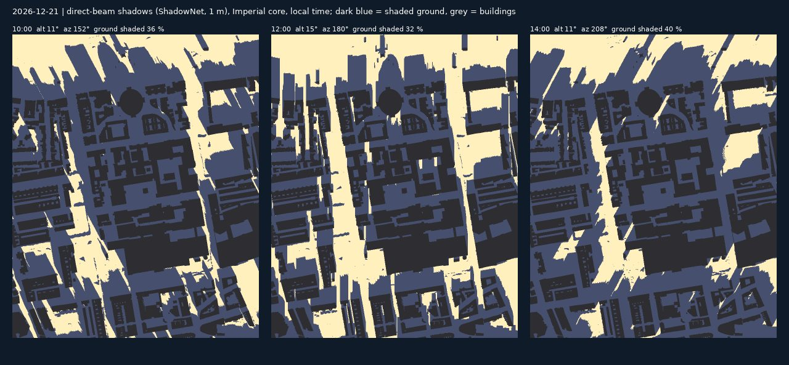
21 December: with the sun at most 15° high, 20–30 m buildings throw 75–110 m shadows and only north–south streets see the sun at noon.
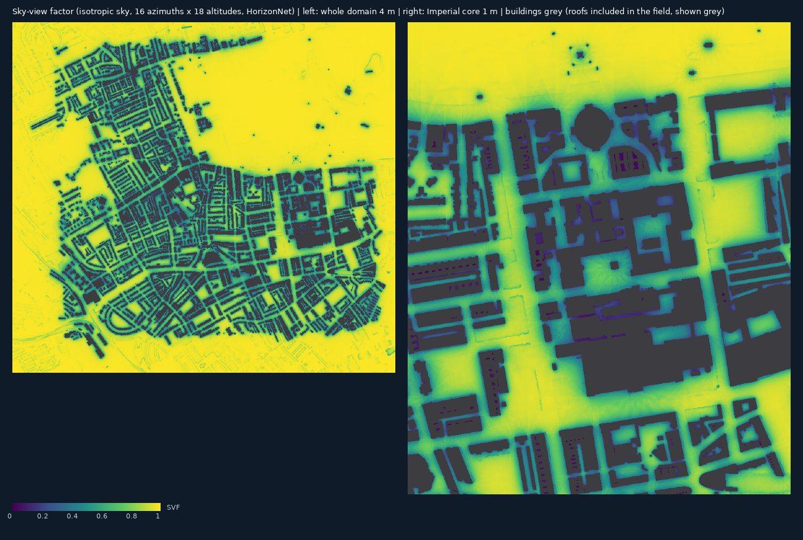
Sky-view factor at 1 m from the horizon angles in 16 directions. Courtyards and narrow streets fall below 0.5.
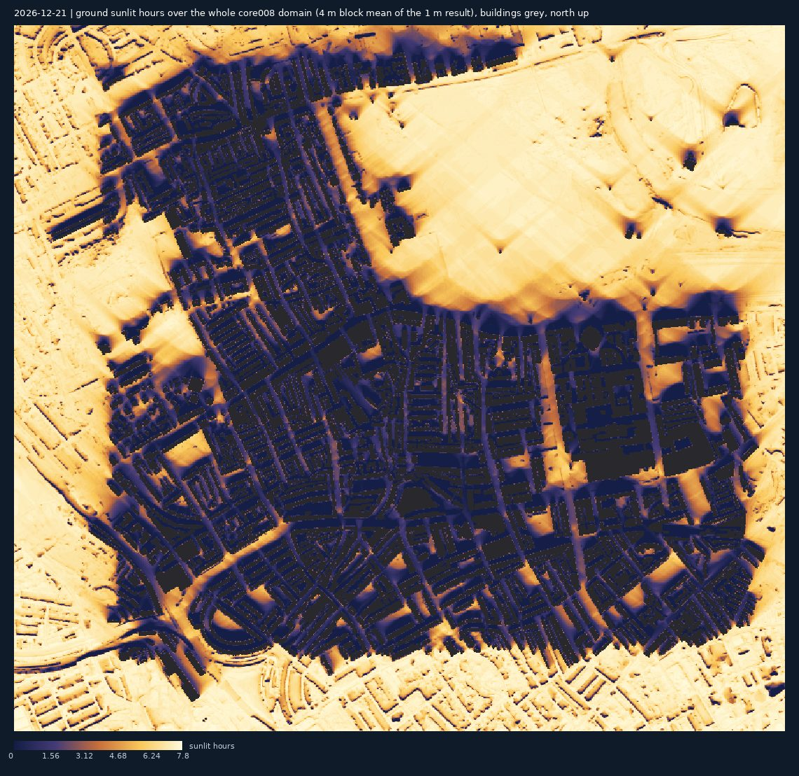
Hours of direct sun on 21 December over the whole domain.
Verification against analytic cases: sun position matches the NOAA calculator, a 20 m column casts 113 / 34 / 11 m shadows at 10° / 30° / 60° (analytic 113.4 / 34.6 / 11.5 m), the sky-view factor at the floor of an infinite 20 m by 20 m street canyon is 0.451 against the 0.447 integral, and random building fields disagree with a brute-force ray march on at most 1.2 % of cells, all at the tips of long shadows.
Interpretation boundaryClear sky only, with monthly ASHRAE coefficients; London's real annual irradiation is roughly half the clear-sky value. Buildings are flat-topped columns, so arcades and overhangs are filled and facades receive no irradiance. Trees are not in the height field and only attenuate the beam on their own canopy cells. One ground bounce, no inter-reflections.
Coupling the sun into the 3-D temperature model
The 3-D model solves a surface energy balance and 3-D advection–diffusion, but its shortwave input was one irradiance number for the whole city with an in-house per-building shadow loop, and one longwave value from the sky. The coupling is one-way: the shadow term becomes the solar model's sunlit fraction and sky-view diffuse light, and the downwelling longwave is weighted by the sky-view factor with walls radiating at air temperature. Everything else in the model, including latent heat, storage, anthropogenic heat and the solver, is untouched. It is also the first time this model runs on the full core008 domain, using a 3-D velocity cache built from the SCALED wind.
25 July, 13:00 UTC, after 30 min
Native
Solar-coupled
Difference
Mean ground shade / radiation deficit
0.036
0.086
shadow + canyon diffuse loss
Mean ground surface temperature
28.97 °C
28.76 °C
−0.21 °C (5th–95th −1.50 to +0.46)
Mean air temperature, 0–4 m
26.57 °C
26.22 °C
−0.34 °C, correlation 0.993
The differences sit where the sky view is low: street canyons, courtyards and the north sides of buildings lose diffuse and longwave income and come out 1–1.5 °C cooler at the surface, locally up to 6 °C, while open ground and parks barely move. Over the summer-solstice day the hourly chain shows the city surface running about 9 °C above the air by mid-afternoon and 1–2.5 °C below it at night, a near-surface air excess peaking at +2.0 °C around 13:00–14:00 and turning to −0.8 °C at night, and vegetation surfaces staying below the air all day.
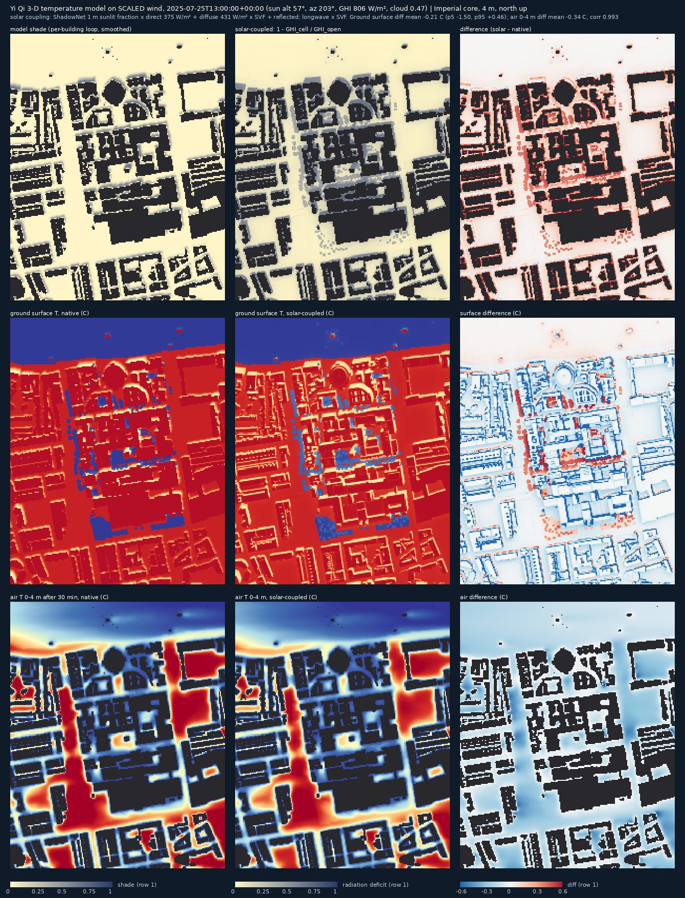
Core area, native versus coupled: shade or radiation deficit, ground surface temperature, and 0–4 m air after 30 min.
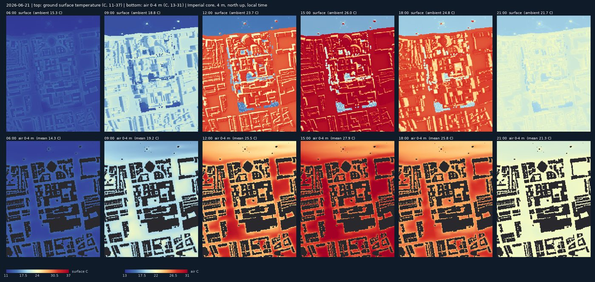
21 June day cycle: surface and air temperature at 06, 09, 12, 15, 18 and 21 h local.
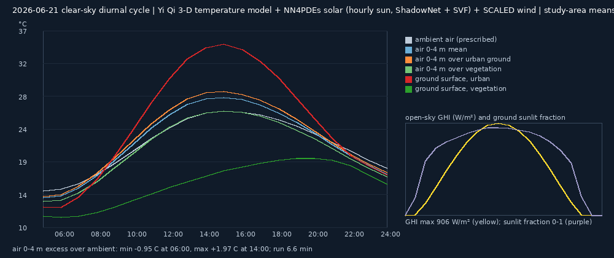
Hourly means: ambient air, 0–4 m air over city and vegetation, ground surface.
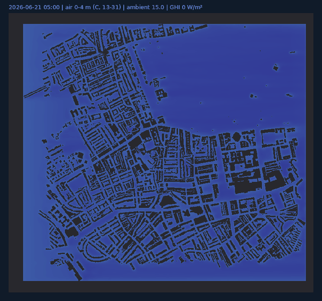
0–4 m air temperature through the day, hourly.
Interpretation boundaryNo observations. The model's scenario parameters set the absolute temperatures; the coupling only redistributes shortwave and longwave in space. The surface balance is instantaneous with no ground heat storage, so night cooling is too fast. Cloud is a simple direct-beam reduction, the wind is the steady SCALED field cycled with no thermal feedback, and facades carry no radiation term.
Pollutant transport carried by the wind steps
A transport solver runs on the 4 m wind field with each 25 s wind step split into fifty 0.5 s sub-steps and the wind interpolated between frames. The source is a continuous line along the upwind western edge, so the plume crosses the whole city. By step 100 the domain holds 17.8 million units of the 18 million emitted; outflow has only just begun. Hot spots form at the windward feet of large buildings where the wind converges, an artefact of the wind field rather than of the transport scheme.
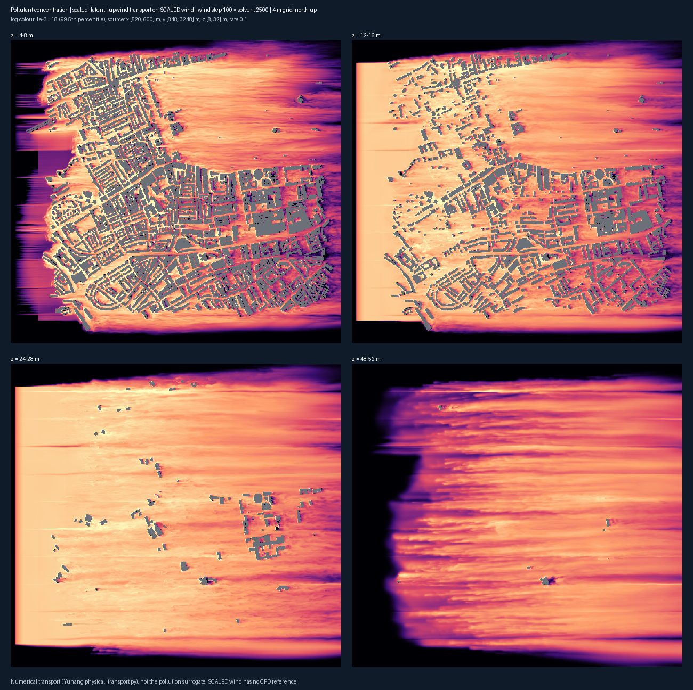
Concentration at 12 m, step 100, log colour scale.
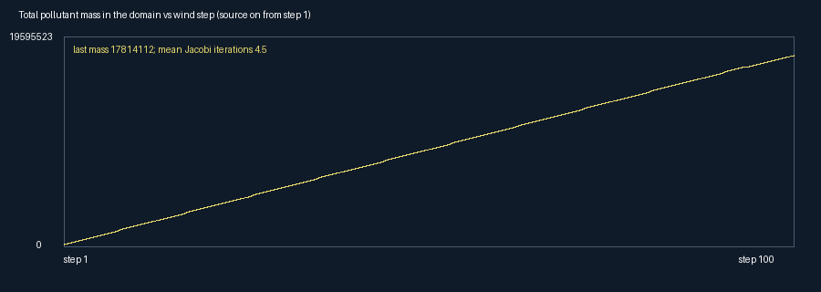
Mass balance: emitted versus in-domain over 100 steps.
ScopeRun at 4 m only. The 1 m grid would be 550 million cells and exceeds GPU memory. The source strength and boundary velocities are experimental settings, not an emissions inventory.
Surface-water flooding from a cloudburst
The discretised shallow-water equations are expressed as fixed convolution stencils on the GPU, following the Advances in Water Resources paper, with three changes for a city: an Arakawa C grid so buildings act as walls and dry cells stay still, a conjugate-gradient free-surface solve for controllable mass conservation, and first-order upwind advection. Rain falls on a 1 m bare-earth LIDAR terrain with buildings raised as solid blocks, sewers remove 12 mm/h from paved ground and roofs, green areas infiltrate 20 mm/h, and excess roof runoff drops to the nearest ground cell.
73.6 ha
max depth above 10 cm
21.0 ha
above 30 cm
0.59 m
99th percentile ground depth
−5.5 m³
mass error on 401,000 m³
17.8 min
wall time, 75,053 steps at 1 m
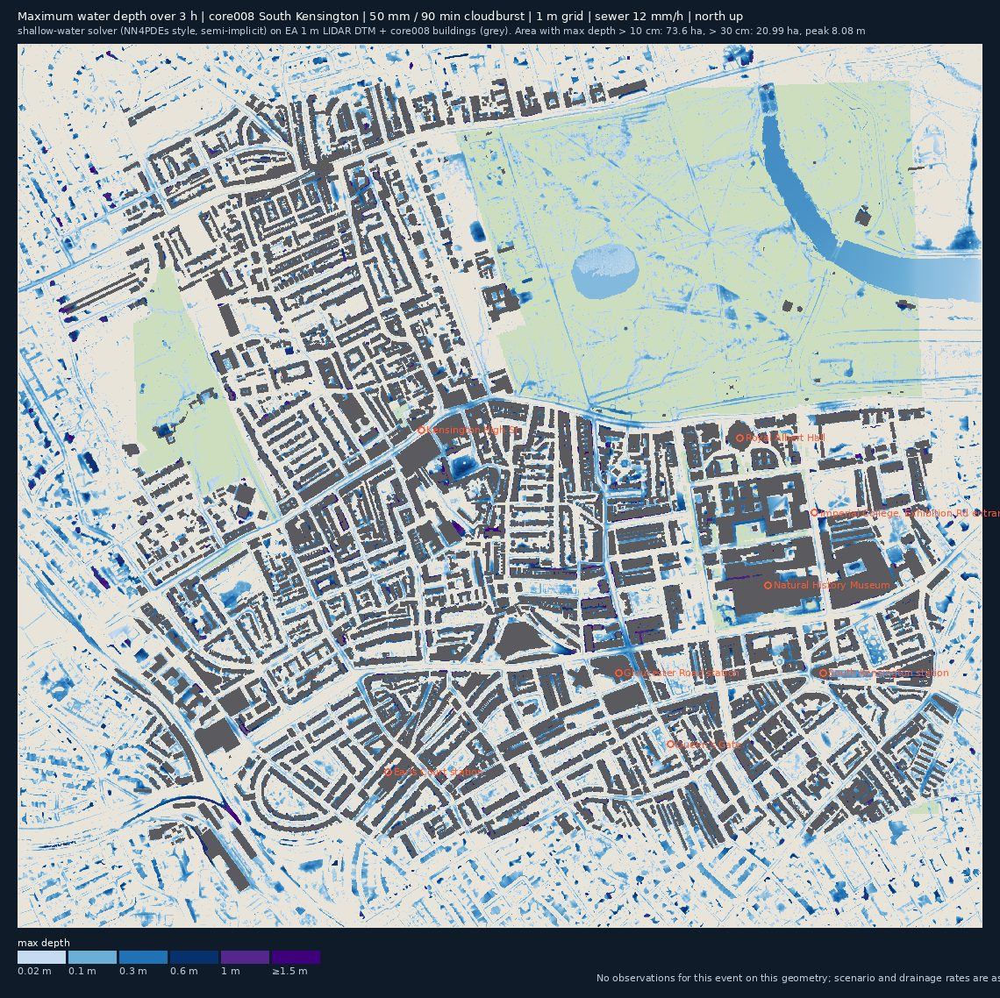
Maximum depth over the 3 h event at 1 m. Water collects along streets into junctions, courtyards and park hollows; the Serpentine and Round Pond fill naturally, which checks the drainage directions.
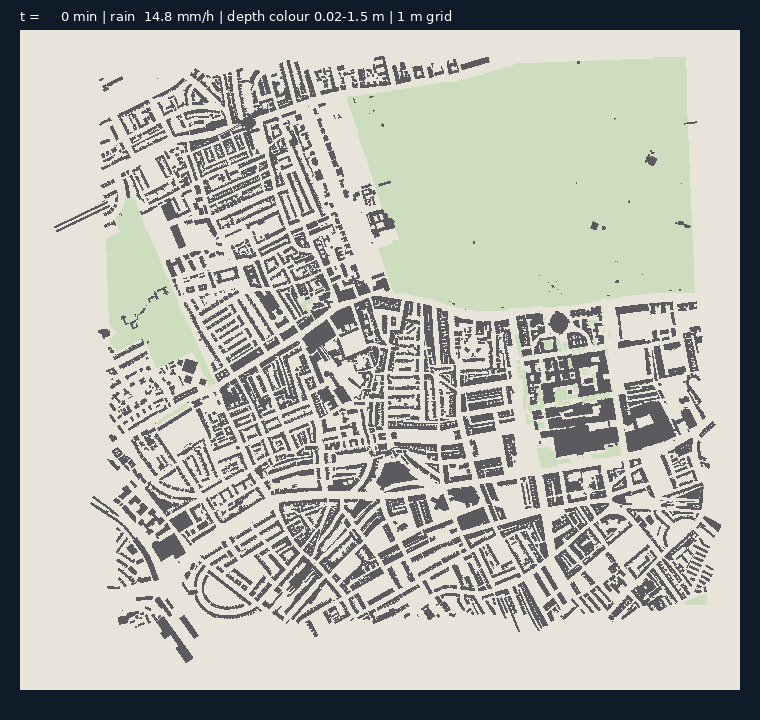
Depth every 10 min. Peak storage 236,000 m³ at 75 min, then recession at the sewer rate.
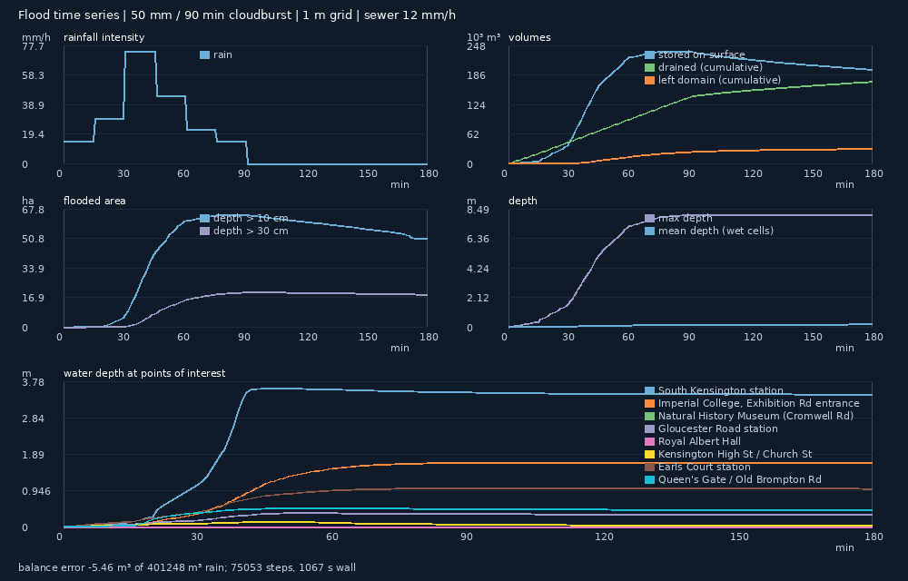
Rain, stored volume, flooded area and depth at points of interest.
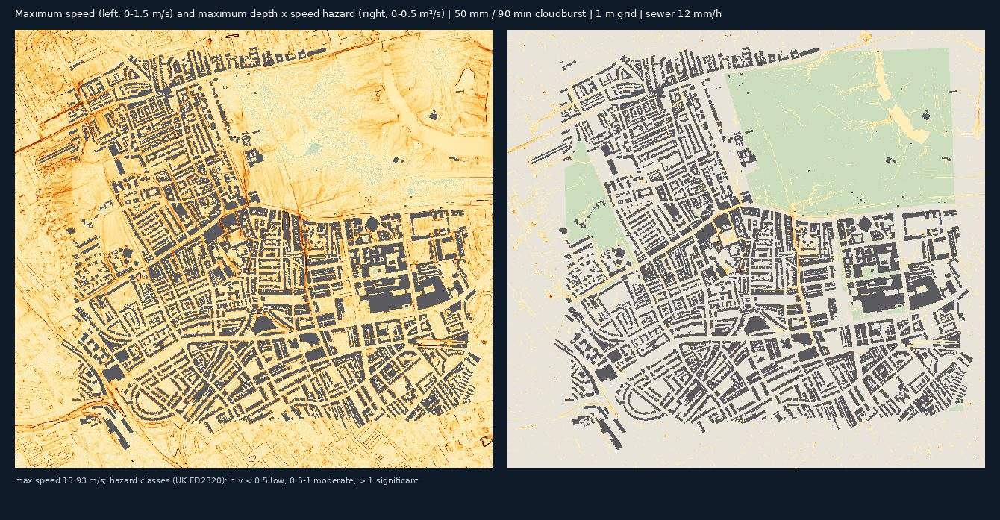
Maximum speed and h·v hazard. Street values mostly below 0.5 m²/s; the extremes sit on DTM cliffs under sub-millimetre films.
Solver verification covers a still lake with buildings (zero motion), a closed basin under rain (volume error 1.8e-8), Manning uniform flow (depth 0.18488 m against the same analytic value), and Stoker dam breaks, where the non-conservative momentum form is 0.7 % off for a mild jump but does not converge for a strong one. Urban depths are centimetres to decimetres, so that limit does not bite here.
Interpretation boundaryThere are no observations of the 2021 event on this geometry. Rainfall, sewer capacity, infiltration and roughness are set values, and there is no pipe network. Real pits in the DTM (the railway cutting at South Kensington station, basements, light wells) collect most of the deepest water, so read the percentile and area metrics rather than the maximum.
Module group
Moving agents
Three replay layers share the one-hour clock and the glTF world frame. They are simulations with audited evidence, not measurements: the traffic is rule-based SUMO on the repaired network, the deliveries come from an earlier NVMF run, and the birds are a flock model run against the same building voxels the wind uses.
SUMO traffic on a repaired OSM network
The first-version network left most of the city unreachable: its largest strongly connected component had 232 edges. Revision 02 re-qualified the lanes geometrically on the original OSM network, reopening 611 lanes and restoring 21 missing middle segments, and closed 65 short lanes on building-clearance evidence. Every one of the 851 signal heads reads the recorded state of its own connection. The result is a one-hour run that passes six release gates: integrity, identity, no teleports, on-drawn-road, signals, and native replay.
Metric
First version
Revision 02
Largest connected component
232 edges · 12.9 km
1,369 edges · 94.9 km
Share of cars moving, hour mean
20 %
43 %
Cars ever stopped ≥ 600 s
926
16
Longest stop
3,595 s
962 s
Teleports / forced removals
—
0 / 0
Centres off drawn lanes
—
0
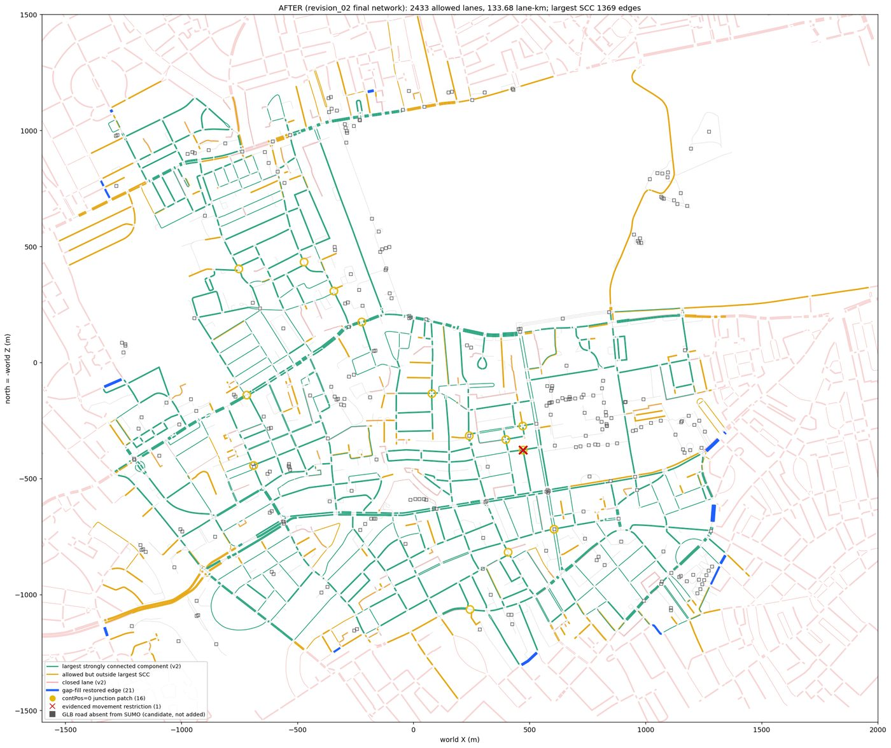
Revision 02 network: largest component in green, reopened lanes, gap fills in blue, junction patches and the one evidenced movement restriction.
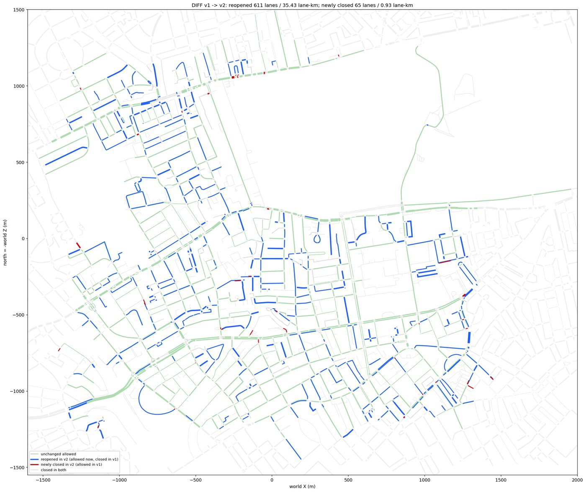
What changed against the first version. No road was closed to improve the numbers.
Residual, stated56 cars are still stopped for 180 s or more at the end, all on the westbound Kensington Road corridor with its closely spaced uncoordinated fixed-time signals, and one wall corner in Radley Mews where a car body overlaps by up to 0.3 m for about 30 s.
300 UAVs, 600 orders, one hour
The delivery layer replays a schedule produced by the NVMF planner over rooftop stations and hubs. Revision 02 only touched the display timeline: same-station take-offs that shared a second are released 2 s apart using their waiting time, which collapsed 103 simultaneous groups to 7, and the original timeline stays switchable. Station positions are a demonstration design, and the replay says nothing about the planner's capability.
300
UAVs
600
deliveries spread over the hour
30
stations
103 → 7
same-second take-off groups
A pigeon flock over South Kensington station
One hundred birds run for an hour with a roost on the station roof and forage sites within 90 m. The geometry they avoid is the same 4 m building mask the wind field uses, cropped to the station district, which is the clearest small example of the shared frame: the flock file records the crop origin and spacing, and the viewer places it without any calibration. At the noon clock the model stays in its murmuration state for the whole hour, so no roosting or foraging trips appear. The bird tracker in the viewer follows the flock centroid or a single bird.
Integration
The viewer
A single three.js page reads every layer straight from the files on disk. Field frames are fetched by HTTP Range request from the float16 arrays and decoded in the browser, so a new run appears the moment its arrays are dropped into the folder. Nothing is tiled, converted or cached in advance.
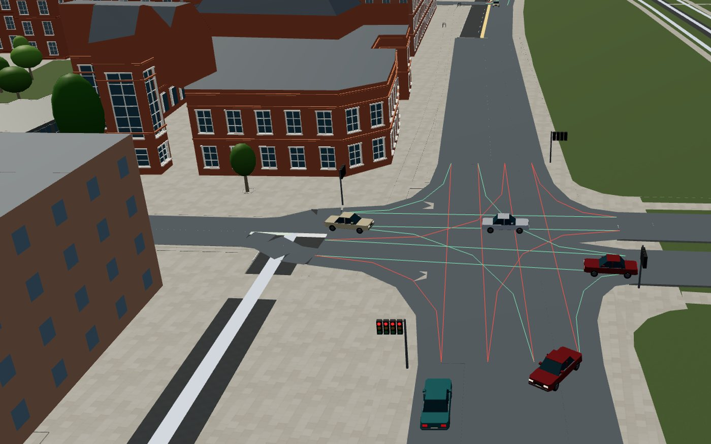
Junction. The busiest signalised junction on the campus ring roads, signal heads reading recorded states.
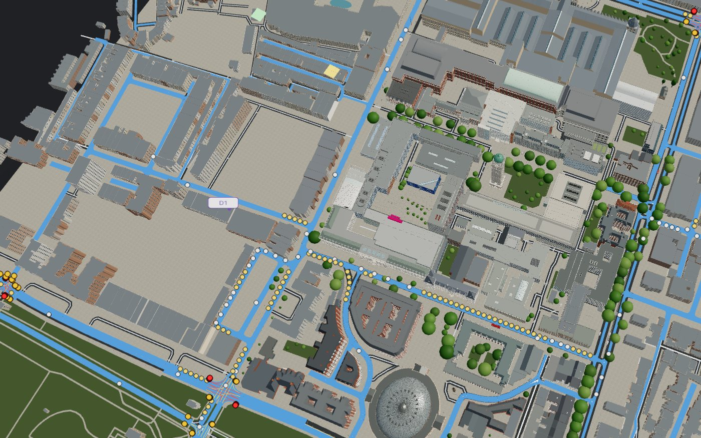
Traffic map. Drivable lanes in blue, cars as moving or stopped dots, every signal as a red, amber or green dot.
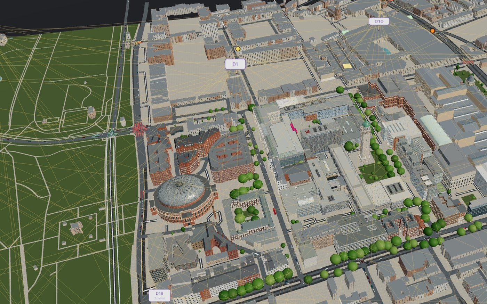
UAVs. High orbit over the campus with the corridors and rooftop stations drawn.
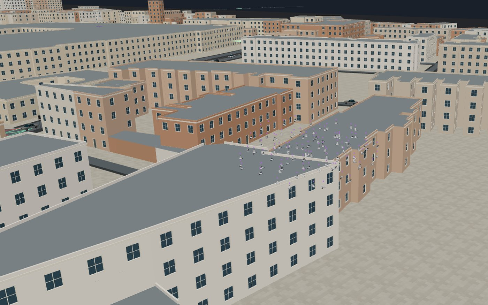
Birds. The flock tracker following the centroid.
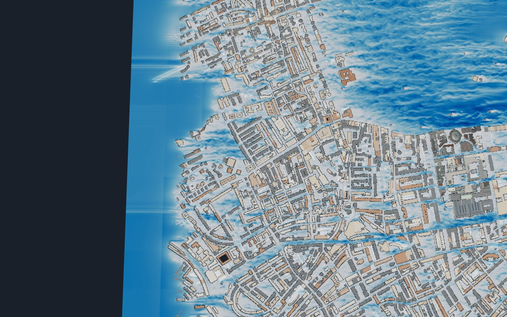
Wind. Speed at 8–12 m as a heat map, building cells cut out, optional streamline particles.
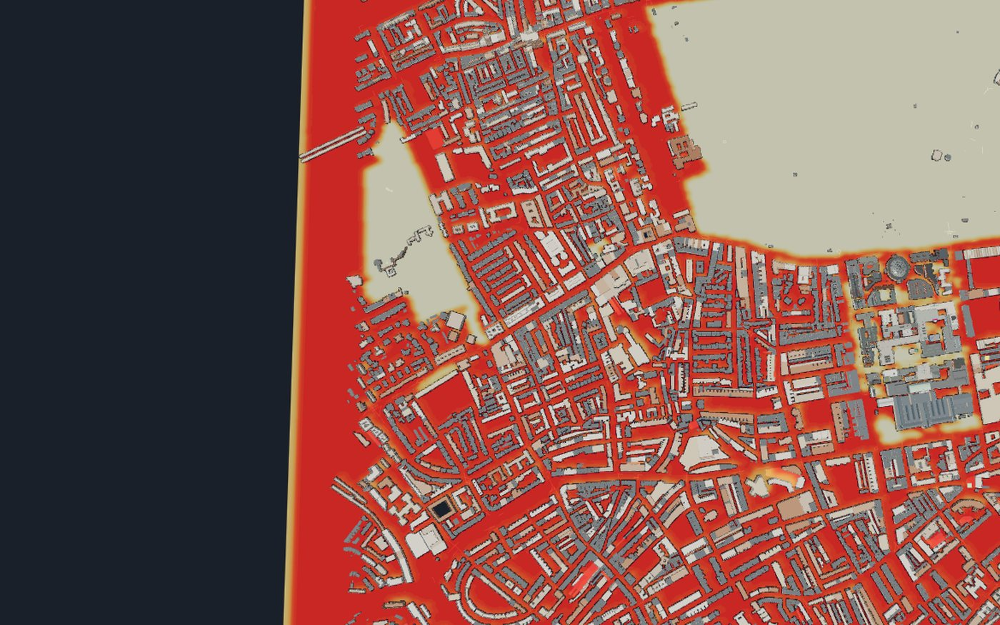
Temperature. Ground heat map or isotherms every 0.1 °C, broken at walls.
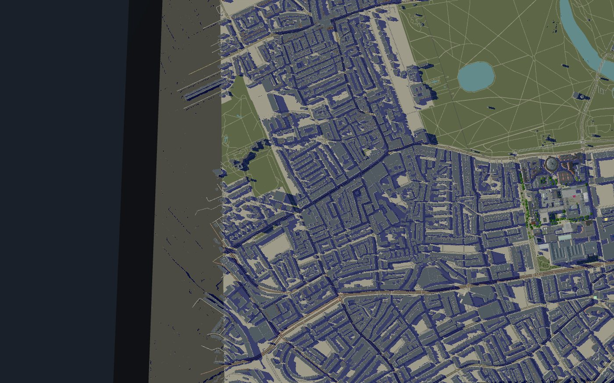
Sunlight. The 1 m shadow mask on the hour, or the 10-min irradiance, as a sun and shade wash over the streets; the scene light follows the real sun.
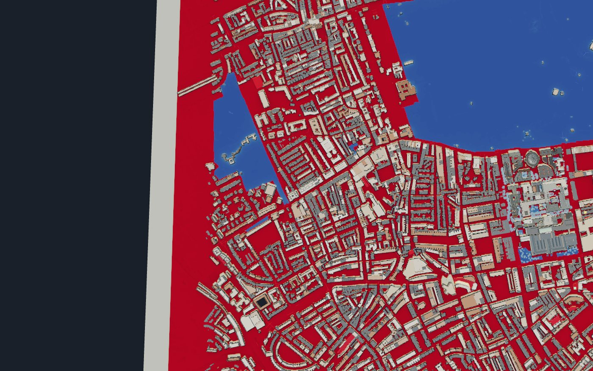
Day cycle. Solar-coupled 3-D temperature, hourly: surface or air layers, in °C or relative to the hour's ambient air.
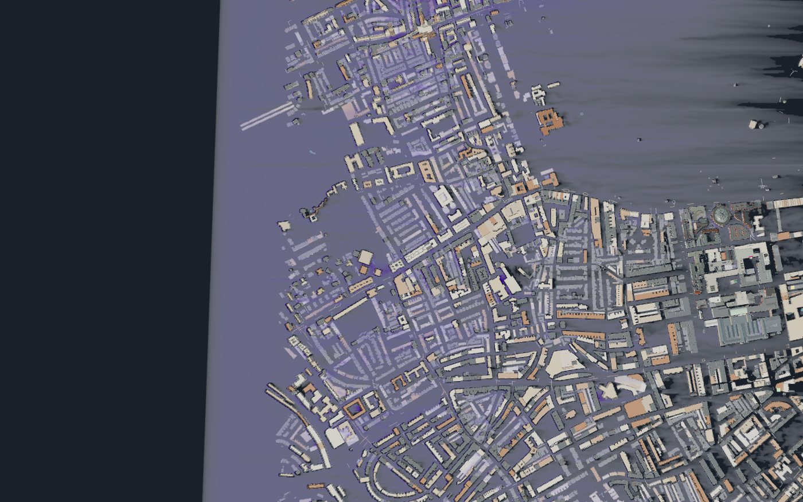
Pollution. Translucent concentration layer at 14 m with logarithmic opacity.
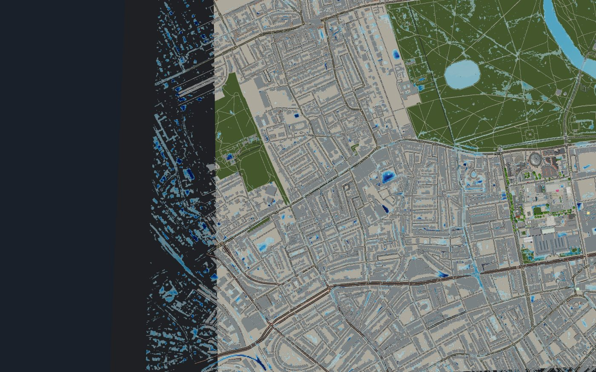
Flooding. Water depth on the ground, roads and greens left visible under the water.
How the page is put together
One loop, two halves. A campus tour (overview, junction, traffic map, UAVs, birds) then an overhead pass that plays wind, temperature, sunlight, the day cycle, pollution and flooding one after another. Big tabs jump to any view; auto loop off holds the current one.
Field playback. Sequential mode shows one field at a time at 12 steps per second; the flood, the hourly shadows and the day cycle run at 2 frames per second on their own clocks. Overlay mode lets layers be combined by hand.
1 m without preprocessing. The hourly shadow frames are 8.7 MB each and are expanded in the browser into a 3072 × 2816 texture draped over the streets, so the 1 m result is shown at full resolution straight from the array.
Replay modules reused unchanged. The traffic, UAV, signal and bird modules from the demo package are wrapped by replay.js rather than rewritten, so the colleague's package remains the source of truth.
Decoupled clocks. The replay clock runs the full hour for UAVs and birds while the 300 s traffic sample loops inside it until the full-hour files are dropped in.
Deployment. Served from the workstation and published through a Tailscale Funnel; remote viewers see roughly 20 Mbps, so the fields section can stutter until frames are pre-rendered to small textures, which is the next step.
Read before citing
Claim boundary
Every module keeps its own limitations next to its results. The short version, per layer:
GeometryAdded buildings and the station tile are estimates registered to the frame, not surveys. Physics fields were not recomputed after the 306 additions.
WindTransfer of a surrogate trained on a 1024 m case to new geometry, with no CFD or measurement reference. Time scale inherited, domain capped at 64 m.
TemperatureExperimental heat scenario against an adapted controlled solver. The recursive 3-D mode is reported as unusable; the 2-D model is a label model, not a heat budget. The solar-coupled day cycle has no observations and no ground heat storage.
SunlightClear sky only; real irradiation is roughly half. Flat-topped building columns, no facade irradiance, trees only attenuate, one ground bounce.
PollutionIdealised continuous line source with set strength. 4 m only. Hot spots inherit the wind field's convergence.
FloodingNo observed inundation for this geometry. Drainage is a uniform rate with no pipe network; DTM pits dominate the maxima.
AgentsRule-based traffic with simulated signal timing, not TfL data. Deliveries replay an earlier planner run. Birds are a behavioural model with no observation.
Reproduce
Run it
The viewer needs only the system Python. The large assets are kept out of git because of GitHub's file limits: the two city GLBs, the field arrays and the full-hour traffic replay are synced separately and placed as listed below.
Start the viewer
Static server with Range support; opens the 3-D page on the next free port.
cd UrbanWorldModelVisualizer
python3 serve.py # localhost:8787/viewer/3d/
python3 serve.py 9000 # custom port
Place the large files
Paths relative to the repository root.
south_kensington_core008_web.glb 254 MB
physics/*/ *.npy field arrays
agents/demo_rev02/data/traffic/replay/ full hour (optional)
south_kensington_current.glb 180 MB (optional)
Useful URLs
Jump straight to a view or fix a camera for screenshots.
Each module names its author in its own README; the viewer and the flood, wind and temperature runs on this page were produced within the Urban World Model group at Imperial College London.
City model core008 BoHan, first-version asset, unchanged.
Traffic and UAV demo package uwm-group1 demo_rev02, SUMO run and audits.
Pollutant transport Yuhang, physical_transport.py.
2-D and 3-D temperature models Yi Qi, south_kensington_temperature.py and south_kensington_temperature_3d.py, run unchanged.
Sunlight model ShadowNet / HorizonNet tensor layers in the NN4PDEs style, ASHRAE clear sky, NOAA sun position.
Flock model Akira, bird simulator in the uwm-group1 repository.
Wind surrogate SCALED-Tutorial published weights, latent domain decomposition adapted for a single GPU.
Flood method Chen, Nadimy, Heaney, Sharifian, Via Estrem, Nicotina, Hilberts, Pain (2025), Solving the discretised shallow water equations using neural networks, Advances in Water Resources.